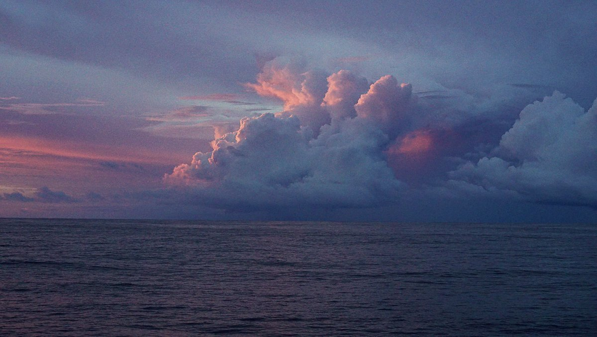

sky reading

When reading the weather on a passage, don't rely solely on weather reports. Learn to use a barometer, and observe and study the sky.
Slow travel stretches time. It makes the world appear bigger, and it gives time to observe details. Clouds speak in shapes. The color of the sky, the direction of the wind, and the changes in temperature, all give clear signs that when read correctly, make it possible to know what's coming.

When clouds appear like rocks and towers, the Earth’s refreshed with frequent showers.
Anvil top cloud: Named for their likeness to an iron anvil, anvil clouds are the icy upper portions of cumulonimbus thunderstorm clouds that are caused by a rising of air in the lower portions of the atmosphere. When the rising air reaches 40,000-60,000 or more feet, it tends to spread out in a characteristic anvil shape. Generally, the taller the cumulonimbus cloud, the more severe the storm will be.
The anvil top of a cumulonimbus cloud is actually caused by it hitting the top of the stratosphere—the second layer of the atmosphere. Since this layer acts as a "cap" to convection (the cooler temperatures at its top discourage thunderstorms (convection), the tops of storm clouds have nowhere to go but spread outward.
At sea, keep your eyes on the clouds. If you notice a cumulonimbus cloud with an anvil top cloud forming, and that it is pointing toward you, reef your sails, as the weather could get very nasty. If the wind is strong, the anvil will shear off in the direction the wind is blowing.

A ring around the sun or moon, means that rain will come real soon.
A ring around the moon: A halo forming around the sun, or moon, is caused by the refraction of sunlight, or moonlight, by ice crystals in high altitudes. Moisture forming at such heights is indicative that is moving downwards, and that an active weather system is coming. See 22° halo, and see a video we took of a 22° halo(YouTube) we saw during a sail in July 2024.
Mackerel skies and mares’ tails, make tall ships carry low sails.
Cirrocumulus clouds: Cirrocumulus clouds, or 'mare's tails' and 'mackerel scales', indicate an approaching warm front, with veering winds (clocking around from NE and E over to SW and W) with rain.
Red sky at night: In the northern hemisphere, as the sun sets, light shines through the lower atmosphere which is full of dust, salt, smoke and pollution. The particles scatter the shorter wavelengths of light at the blue end of the spectrum, leaving only the longer wavelengths (at the red end of the spectrum) to shine through. In a high-pressure area, air sinks and holds air contaminants near the earth, making the sunset even more red.
Red sky in the morning: A red sky in the eastern morning sky occurs for the same reasons as a red sky at night, but then the high pressure region has already passed from West to East, and may indicate an area of low pressure is coming. Low pressure systems bring clouds, rain and storms.
Other indicators of deteriorating weather:
- Reduction in visibility
- Direction of wind, shifting from N > E, or from E > S (cold front).
- Clouds moving in different direction, at different heights indicate shifting winds and approaching storm fronts.
- Cumulus begin to develop vertically and darken
- Sky is dark and threatening to the West.
- Clouds increasing in numbers, moving rapidly across the sky.
Indicators of impending strong winds:
- Yellow sunset
- Light, scattered clouds alone in a clear sky
- Sharp, clearly defined edges to clouds
- Unusually bright stars
- Major changes in the temperature

Indicators of impending precipitation:
- Distant objects seem to stand above the horizon
- Sounds are very clear and can be heard for great distances
- Transparent veil-like cirrus clouds thicken, ceiling lowers
- Hazy and sticky air. Rain may occur in 18-36 hours
- Halo around the sun or moon
- Increasing South wind with clouds moving from the West
- Wind (especially North wind) shifting to West and then South
- Steadily falling barometer
- Pale sunset
- Red sky to the West at dawn
- No dew after a hot day
Indicators of continuing fair weather:
- Early morning fog that clears
- Gentle wind from the West or Northwest
- Barometer steady or rising slightly
- Red sky to East with clear sky to the West at sunset
- Bright moon and light breeze at night
- Heavy dew or frost.
- Clear blue morning sky to West
- Clouds dot the afternoon summer sky
Indicators of clearing weather:
- Cloud bases rise
- Smoke from stacks rise
- Wind shifts to West, especially from East through South
- Barometer rises quickly
- A cold front has passed in the past 4 to 7 hours
- Gray early morning sky shows signs of clearing
- Morning fog or dew
- Rain stopping and clouds breaking away at sunset
Source: Indicators of weather courtesy of Larry and Susan Macdonald. Their wonderful website came offline this year (2020), and we've retrieved some of the content using Wayback Machine.